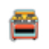
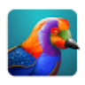

StickerBakerГенерация изображений
«StickerBaker» подготавливает изображения для стикеров.
Генерация изображений: Используйте один запрос для нескольких сервисов. Сравните композицию, детали, работу с референсом и возможности редактирования.
Сделайте иллюстрацию к материалу о домашней библиотеке, описав её содержание словами. Укажите предметы, композицию и цветовую гамму; оставьте место под заголовок и проверьте читаемость изображения в размере карточки статьи.
Нарисуй иллюстрацию для статьи о домашней библиотеке: деревянный стеллаж, кресло и светильник, тёплая палитра. Справа оставь спокойное пустое пространство под заголовок, букв и надписей не добавляй.


«StickerBaker» подготавливает изображения для стикеров.

Stockimg AI рассчитан на задачи, где нужно собирать видеосцену по описанию или визуальному исходнику. Ещё одно направление работы: готовить материалы о товарах и услугах.
Сравнивать «SVG.io» с другими инструментами раздела «Генерация изображений» удобнее на одинаковом исходном материале.
Сравнивать «VikingPic» с другими инструментами раздела «Генерация изображений» удобнее на одинаковом исходном материале.
«Vose AI» готовит визуальные материалы по заданию.

Wondershare AILab используют, чтобы собирать видеосцену по описанию или визуальному исходнику. Ещё одно направление работы: менять фотографии с учётом выбранного оформления.
6pen Art подготавливает изображения и ИИ-аватары с использованием моделей глубокого обучения. Среди описанных технологий есть DALL-E и Stable Diffusion. Платформа объединяет эти средства для визуальной работы, позволяя пользователю рассматривать создание художественного изображения и цифрового образа в рамках своего проекта.
Для «A1.art» сначала определите свою задачу и требуемый результат. Карточка относится к направлению «Генерация изображений».

AdCreative.ai предлагает подготовку вариантов рекламного материала. Изображение и текст следует оценивать вместе: красивый макет должен корректно передавать свойства предложения.

AdpexAI используют для задачи: собирать видеосцену по описанию или визуальному исходнику. Ещё одно направление работы: получать изображения из словесного задания.

«AI Gallery» готовит визуальные материалы по заданию.
AI Pokemon generator помогает создавать вымышленных существ в стилистике покемонов. Предусмотрены несколько вариантов за один запрос и настройка типа, цвета и условного поколения. Для игрового концепта сравните формы и отличительные детали персонажей; отдельно уточните условия использования изображений и не представляйте результат как официального героя франшизы.
Сравнивать «AI Shots» с другими инструментами раздела «Генерация изображений» удобнее на одинаковом исходном материале.
«AI Time Machine» создаёт портретные и аватарные изображения.
Сравнивать «aiphoto.studio» с другими инструментами раздела «Генерация изображений» удобнее на одинаковом исходном материале.
«AirSmartLab» готовит визуальные материалы по заданию. «AirSmartLab» также создаёт видеоматериал по заданию.

Aitubo создаёт изображения из эскизов с помощью ИИ, включая игровые материалы и фотографии. В продукте также представлены мультяшные визуальные варианты. Редактор позволяет изменять созданные изображения и уточнять художественные ресурсы, связывая генерацию и дальнейшую обработку в одном процессе.
«Arteus AI» готовит визуальные материалы по заданию.
Artify на artifylabs.io превращает рисунок в цифровое искусство с помощью ИИ. Доступные функции включают редактор изображений, генерация по текстовой подсказке и инструмент продажи товаров. Продукт связывает исходный рисунок и словесный замысел с подготовкой визуального материала и последующим коммерческим сценарием.
«Artimator.io» готовит визуальные материалы по заданию.
«Baseten» готовит визуальные материалы по заданию.
В инструменте «Bubio.ai» можно собирать видео с цифровым ведущим. Ещё одно направление работы: получать изображения из словесного задания.
ChinaAI используют, чтобы собирать видеосцену по описанию или визуальному исходнику.
«DavinciAI Toolkit» позволяет создавать воспроизведение голоса. «DavinciAI Toolkit» также проверяет признаки происхождения или заимствования текста.
«DecorAI.xyz» помогает представить оформление помещения.
«Deep Anime» представлен в разделе «Генерация изображений». При выборе проверьте нужную операцию и условия работы с результатом.
«Devoid AI» готовит визуальные материалы по заданию.
«DiffusionBee» готовит визуальные материалы по заданию.
«Disney AI Poster» готовит визуальные материалы по заданию.

DomoAI создаёт визуальные эффекты с помощью набора ИИ-моделей. Среди описанных направлений есть аниме и бумажная стилизация, а также трёхмерные мультяшные варианты и пиксельная графика. Пользователь может выбирать художественную подачу, связывая замысел изображения с доступными стилями обработки продукта.
Dream by WOMBO создаёт художественные изображения в мобильном приложении. Для генерации можно выбирать живописные стили и получать визуальный материал.
«Dreamlike.art» готовит визуальные материалы по заданию.

Dzine рассчитан на задачи, где нужно получать изображения из словесного задания. Ещё одно направление работы: менять фотографии с учётом выбранного оформления.
«Erudite AI» готовит текстовый черновик по условиям задачи.
Flush AI предлагает облачную творческую среду с генеративными моделями для изображений и письменных задач. В исходном описании также отмечено улучшение визуального материала. Перед выбором режима выясните, какая операция доступна для вашего исходника, и сравните обработанный фрагмент с оригиналом по деталям, которые требуется сохранить.
«Fotor image generator» представлен в разделе «Генерация изображений». При выборе проверьте нужную операцию и условия работы с результатом.
GPT Image создаёт изображения по текстовому заданию. Модель предназначена для получения визуального материала, включая изображения с реалистичной подачей.
«Graphic AI» преобразует речевую запись в письменный материал. «Graphic AI» также готовит визуальные материалы по заданию.
Hunyuan 3D превращает изображения, текст или эскизы в трёхмерные объекты с текстурами. Поддерживает онлайн-работу и варианты локального запуска.
Для «Iconai» сначала определите свою задачу и требуемый результат. Карточка относится к направлению «Генерация изображений».
«Image Mixer» готовит визуальные материалы по заданию.
«IMGtopia» готовит визуальные материалы по заданию.
«Kirin» представлен в разделе «Разработка». При выборе проверьте нужную операцию и условия работы с результатом.
«LegenDraw» создаёт портретные и аватарные изображения.

Leonardo.Ai помогает создавать, редактировать и анимировать изображения. Полезен для визуальных концепций, персонажей и материалов, которые затем доводят до рабочего макета.
Для «Little Artist» сначала определите свою задачу и требуемый результат. Карточка относится к направлению «Генерация изображений».
LlamaGen AI помогает создавать аниме, комиксы и материалы для игр с использованием генеративного ИИ. Отдельное направление включает работа с комиксами и согласованность персонажей между изображениями. Инструмент объединяет визуальную часть повествования с разработкой истории, когда рисунки должны относиться к одним героям.
Сравнивать «Magicly» с другими инструментами раздела «Генерация изображений» удобнее на одинаковом исходном материале.
Страница 2 из 14